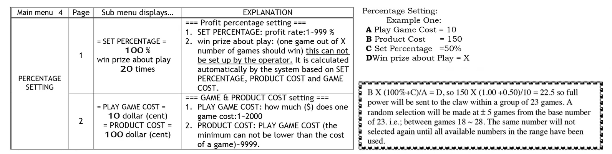
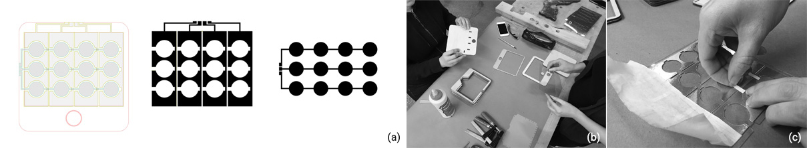
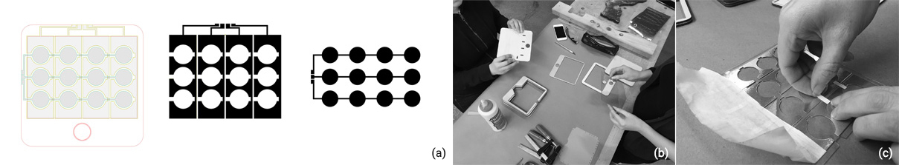
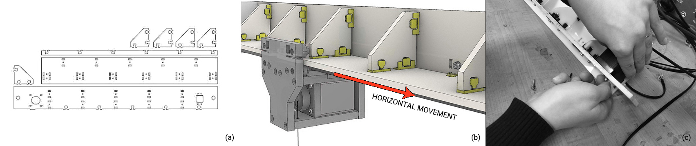
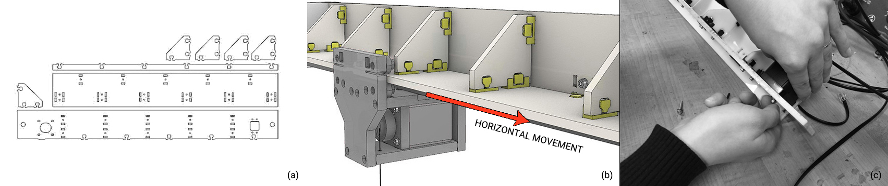
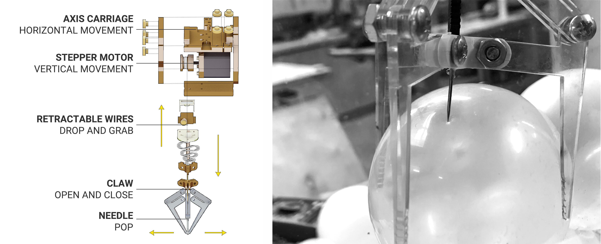
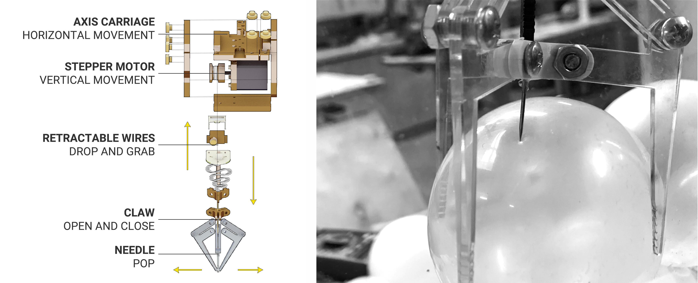
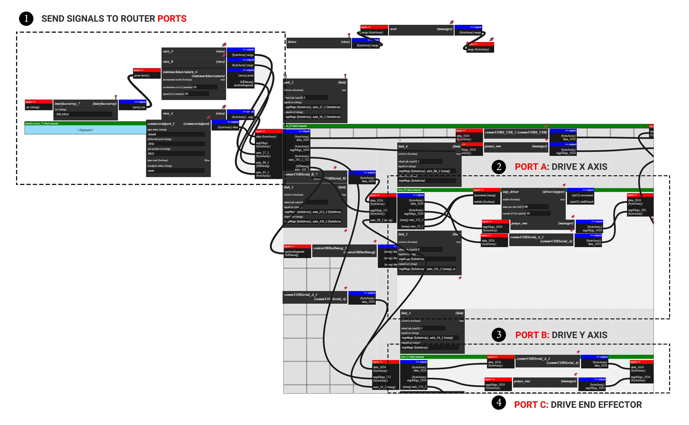
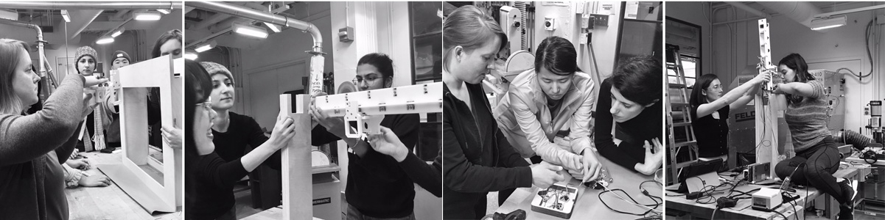
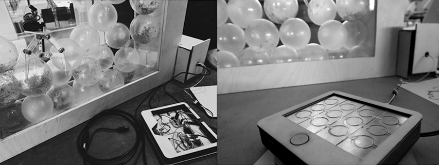

A "Pick-up-nothing" Claw Machine
The project exprimented a fast-paced and low-cost machine design and fabrication process under agile development framework at MIT Fab Lab. The final delivery is a “pick-up-nothing” claw machine with self-designed and fabricated mechanical structure construction, circuit system, and interactive input and output.
-
Role
Electronics design & Fabrication
Digital modeling & Fabrication
- Director Neil Gershenfeld
- Team MIT HTMAA Fab Lab
INITIAL DESIGN
The practice of rigging a claw machine to ensure a margin of profit is hardly new. A big decision for machine owners is how fair or unfair they want to program the game. They could adjust the machine so that the claw only operates on full power one out of every 23 times. That would, in theory, create a profit of around 50 percent.
"Pick-Up-Nothing" machine is a critical and honest design challenging the hidden mechanism that remained untransparent for decades to its end users.
A thread of initial brainstorm conversation centered around what the claw should pick up: nothing. Thus, we settled on a game (of sorts) where users would
control horizontal movement of the claw and pop balloons with the center needle.
OVERVIEW
As we fabricated almost all hardwares on our own and reuse some discarded materials in the studio(e.g, wires,
ethernet, chipboard etc), the total cost of this machine is about $30 for buying the 1/2''plywood and 1/4'' plexiglass.
1 | Material list
| Thing | Size | QTY | What For? | Vendor | PN / Link |
|---|---|---|---|---|---|
| Plywood | 1/2'' 36x24'' | 3 | House | Blick | |
| Copper boards | 6x6'' | Reused pieces | Electronics fabrication | Blick | |
| Acrylic | 1/4" 12x24" | 4 | Chassis / Beams | McMaster | 8505K755 |
| 625ZZ Bearings | 5x16x5mm | 45 | Rollers | VXB | link or McMaster 6153K113 |
| Shoulder Bolts | 5x6xM4 | 45 | Bearing Shaft | McMaster | 92981A146 |
| Bearing Shims | 5x10x0.5mm | 64 | Bearing Standoffs | McMaster | 98089A331 |
| Heat-Set M4 Tapered Inserts | M4 | 50 | Shoulder Bolts -> 3DP Parts | McMaster | 94180A351 |
| Heat-Set M3 Tapered Insert | M3 | 64 | Mechanical Design w/ Plastic | McMaster | 94180A331 |
| Nylon Locknuts | M3 | 200 | McMaster | 93625A100 | |
| M3 SHCS | 16mm Long | Beam Joinery | 200 | McMaster | 91292A115 |
| M3 SHCS | 10mm Long | Motor Mounting | 16 | McMaster | 91292A113 |
| M3 FHCS | 16mm Long | Carriage Joinery | 100 | McMaster | 92125A134 |
| M3 Washers | - | w/ all M3 SHCS | 200 | McMaster | 93475A210 |
| 20T or 16T GT2 Pulley | 10mm or Wider, 5mm Bore | 4 | Power Transmission | Amazon or SDP/SI | Amazon Link |
| 6mm Wide GT2 Belt | - | 5m | Power Transmission | Amazon or SDP/SI | Amazon Link |

AGILE DEVELOPMENT
Our strategy for breaking apart and organizing our efforts within time limitation in one week was to think of the machine as a series of modules that would
evolve through collaboration between self-organizing cross-functional teams.
1 | Input device
 

2 | Horizontal Axis
 

3 | End Effector - Claw
 

4 | Software
In the software part, the project used Cuttlefish, a modular browser computing system and a member of the squidworks project
developed by Jake Read, an effort to develop a distributed dataflow computing protocol. Here, modular code is wrapped in dataflow
descriptors and handles that allow rapid assembly of computing applications (programs!).
ASSEMBLY AND TEST
 
IMPROVEMENTS
The next improvement is to do comparison test on the choice of needle thickness and sharpness. Some users reported that
the current needle is not thick enough to pop the ballon even when it pierced in and suggests the gaming experiences will be enhanced
if the needle can give immediate feedback.